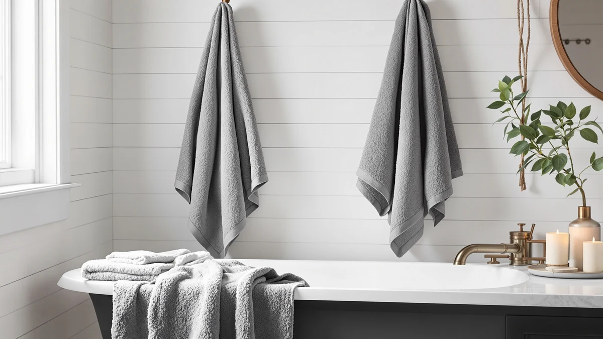

LANE LINEN Luxury 24 Review (2026): Worth It?
Prices and picks verified as of September 2026. Independent, reader-supported reviews.


Quick Answer
This Lane Linen Luxury 24 review's pick backs up its $64.99 price with 100% ring spun cotton and OEKO-TEX certification across all 24 pieces, from bath sheets down to washcloths. It costs about a dollar more than LANE LINEN's own 24-piece Cool Grey set with the same specs, so the choice mostly comes down to which color fits your bathroom.
Our pick: LANE LINEN Luxury 24 PCs, $64.99 Check Price on Amazon
Bottom line: our top pick is the LANE LINEN Luxury 24 PCs Bath Towels Set - 100% Ring Spun at $64.99.
Things to Know Before You Buy
- The Lane Linen Luxury 24 set breaks down into 2 bath sheets (35 x 66 inches), 4 bath towels (28 x 54), 6 hand towels (16 x 26), 8 washcloths (12 x 12) and 4 fingertip towels (12 x 18), enough to stock a full bathroom from a single order.
- Ring spun cotton is spun tighter than standard carded cotton, which is the construction LANE LINEN points to when it markets this set as long-staple and built to hold up through repeat washes.
- OEKO-TEX Standard 100 certification confirms the finished towels are free of harmful chemical residue, a separate claim from the raw cotton fiber itself.
- Amazon does not currently show a public rating or review count for this Space Grey listing, so you're weighing the certifications and specs here rather than a star rating.
- At $64.99, this Space Grey set costs about a dollar more than LANE LINEN's own Cool Grey set with the identical 24-piece breakdown, so color is often the real deciding factor between the two.
This Lane Linen Luxury 24 review breaks down what you get for $64.99: a 24-piece set of 100% ring spun cotton towels, from bath sheets to washcloths, backed by OEKO-TEX certification confirming the finished fabric carries no harmful chemical residue.
Three other towel sets appear later in this review as direct alternatives: LANE LINEN's own Cool Grey version of this exact 24-piece design, a 24-pack of bath towels only from ZUPERIA built for bulk and everyday use, and a six-piece Egyptian cotton set from Superior with a more traditional hotel-style finish. Prices across the four range from $59.00 to $64.99, so the gap between sets usually comes down to piece count and finish rather than a dramatic difference in cotton quality.
Why You Should Trust Us
Ilane Tall covers bath and home textiles for Best Bath Towels and has spent years comparing towel specs, certifications and pricing across hundreds of Amazon listings. For this Lane Linen Luxury 24 review, we cross-checked LANE LINEN's ring spun cotton and OEKO-TEX certification claims against the listing details for both the Space Grey and Cool Grey versions of this set, then compared the piece count and per-towel price against three alternative sets covering a range of budgets. We do not run a physical testing lab and never claim to have washed or handled these towels ourselves. Instead, we research specs, certifications and available pricing so you can make an informed decision without paying for a set that doesn't match its marketing. When a claim on a listing can't be verified against a certifying body or a documented spec, we say so directly rather than repeating the manufacturer's language as fact.
Our Research Experience
Rather than running physical trials, our process for this Lane Linen Luxury 24 review centered on specification and pricing research. We pulled the ring spun cotton claim, the OEKO-TEX certification, and the exact piece breakdown directly from LANE LINEN's listing, then checked those numbers against the nearly identical Cool Grey version of the same set to see where, if anywhere, the two actually differ. We also compared the per-towel value of this 24-piece set against a bulk 24-pack that skips hand towels and washcloths entirely, and against a smaller six-piece Egyptian cotton set built for a different kind of household. Amazon does not currently publish a verified rating or review count for this Space Grey listing, so instead of guessing at buyer sentiment, we built this review around the parts of the listing that are documented and verifiable: the certification, the fabric claim, and the price.
Overview & Specs

LANE LINEN Luxury 24 PCs
What we like
- 100% ring spun cotton backed by OEKO-TEX Standard 100 certification
- 24-piece set covers bath sheets down to washcloths in a single purchase
- Reinforced, double-stitched hems built for repeated washing
- Space Grey colorway shows less visible staining than white towel sets
Flaws but not dealbreakers
- No published rating or review count on this specific Space Grey listing
- Costs about a dollar more than LANE LINEN's own Cool Grey version of the same set
- 24 pieces is more towel than a one- or two-person household typically needs at once
| Material | 100% cotton |
| Size | 24 Piece Family Towel Set |
The Space Grey colorway is the version we focus on for this Lane Linen Luxury 24 review, priced at $64.99 for all 24 pieces. LANE LINEN builds the set from ring spun cotton, a tighter, longer-staple spin than standard carded cotton, and backs every towel with OEKO-TEX Standard 100 certification confirming the finished fabric is free of harmful chemical residue. The 24-piece breakdown includes 2 bath sheets, 4 bath towels, 6 hand towels, 8 washcloths and 4 fingertip towels, which covers a family bathroom, a guest bathroom, or a heavily used gym bag rotation from one order.
LANE LINEN reinforces the hems with double stitching, and that matters because loose or fraying hems are one of the more common complaints on budget towel sets after a few months of washing. Amazon doesn't surface a public rating or review count for this specific Space Grey listing at the time of writing, so we can't point to verified owner feedback for this exact SKU the way we can for some sets with a longer sales history. The closest comparison point is LANE LINEN's own Cool Grey set below, which uses the identical cotton, certification, and piece count at $63.64, about a dollar less.
What We Liked
What stands out most in this Lane Linen Luxury 24 review is the piece count paired with a real certification. Plenty of towel sets bundle a large number of pieces to look like a deal, but this one backs the size with ring spun cotton and OEKO-TEX Standard 100 certification, so the volume doesn't come at the cost of fabric quality on paper. The 24-piece breakdown also spans every size a household actually uses: bath sheets for after a shower, hand towels and washcloths for the sink, and fingertip towels for guest bathrooms, instead of a stack of identical bath towels alone. Reinforced double-stitched hems are a small detail, but they're the kind of construction choice that shows up in how long a towel holds together rather than in a listing photo.
What Could Be Better
The biggest gap in this Lane Linen Luxury 24 review's pick is the lack of published buyer feedback. Amazon doesn't currently show a rating or review count on this specific Space Grey listing, which makes it harder to confirm how the towels hold up after months of regular washing compared to sets with an established review history. The price also sits about a dollar above LANE LINEN's own Cool Grey set, which uses the same cotton, the same certification, and the same 24-piece breakdown, so Space Grey buyers are effectively paying a small premium for color alone. And for a single person or a couple, 24 pieces is more towel than most people cycle through before laundry day, which makes this set a better fit for larger households than for anyone living alone.
Who Is It For?
This Lane Linen Luxury 24 review points toward one clear buyer: a family or multi-person household that wants to stock an entire bathroom, or two, from a single order instead of buying bath towels, hand towels, and washcloths separately. If the OEKO-TEX certification and ring spun cotton matter to you and you specifically want the Space Grey colorway, the $64.99 price is easy to justify against buying the pieces individually. Shoppers who don't care about the color and want to save a dollar should look at the Cool Grey version covered below, and anyone who only needs bath towels without the hand towels and washcloths will get more value per towel from the ZUPERIA bulk pack.
Alternatives to Consider
If the Space Grey color in this Lane Linen Luxury 24 review's top pick isn't the deciding factor for you, these three alternatives cover the other directions a towel purchase can go: the same fabric and certification in a different color, a larger bulk pack of bath towels only, and a smaller Egyptian cotton set built around a more traditional hotel finish. Each one trades away something this LANE LINEN set offers, whether that's the exact color, the mix of towel sizes, or the piece count, in exchange for a different price or a different use case.

Editor's Pick
LANE LINEN 100% Cotton Bath
The Cool Grey version of the identical ring spun cotton, OEKO-TEX certified 24-piece set, priced about a dollar below the Space Grey pick above if color is your only consideration.
$63.64
Check Price on Amazon
Best Value
ZUPERIA White Bath Towels Bulk
A 24-pack of 100% cotton bath towels only, sized for everyday and commercial use, worth a look if you don't need the hand towels and washcloths bundled into the Lane Linen set.
$62.99
Check Price on Amazon
Premium Choice
Superior Egyptian Cotton 6-Piece Towel
A six-piece Egyptian cotton set with a textured rope border and OEKO-TEX certification, sized for a single bathroom rather than a full household restock.
$59.00
Check Price on AmazonIs the LANE LINEN Luxury 24 PCs towel set actually 100% cotton?
Yes, based on the listing details for this set.
How does this Lane Linen Luxury 24 review's pick compare to the Cool Grey version?
The Space Grey and Cool Grey versions use the same ring spun cotton, the same OEKO-TEX certification, and the identical 24-piece breakdown of bath sheets, bath towels, hand towels, washcloths and fingertip towels.
Frequently Asked Questions
Is the LANE LINEN Luxury 24 PCs towel set actually 100% cotton?
How does this Lane Linen Luxury 24 review's pick compare to the Cool Grey version?
Is a 24-piece towel set worth it over a smaller six-piece set?
Final Verdict
The verdict from this Lane Linen Luxury 24 review is straightforward: the Space Grey set earns its $64.99 price through a documented cotton claim and an OEKO-TEX certification rather than marketing language alone, and the 24-piece breakdown covers a full bathroom from one order. If you specifically want that Space Grey color, this LANE LINEN set delivers on the certification and piece count it promises. If color doesn't matter to you, the Cool Grey version of the same LANE LINEN set saves you about a dollar for the identical fabric and construction.